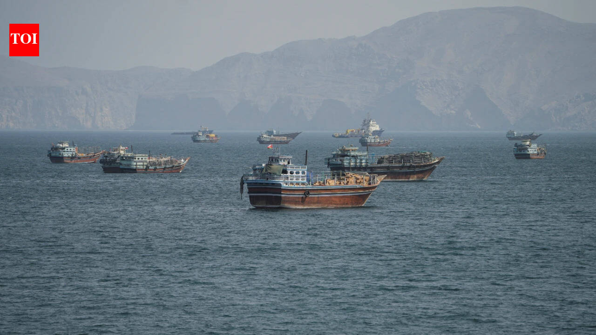

Saudi Arabia investigates how its air defenses missed the Houthi barrage that killed 13 at Riyadh airport
12 Oct 2026
AP: More than 300 were wounded; the coalition says it downed two more ballistic missiles fired at Riyadh on Monday. Houthi officials report Saudi strikes on al-Jawf and Sanaa, and Trump says he is weighing US strikes on the Houthis.
Open AP

Zelenskyy says Russia has already violated Trump’s “energy ceasefire” and asks Washington to enforce it
12 Oct 2026
Al Jazeera / BBC: Zelenskyy counts six energy sites hit and 33 injured since Sunday’s announcement; Ukrenergo reports new outages in Kharkiv, Donetsk and Zaporizhzhia. Moscow has not confirmed the truce. The EU added almost 1,600 new Russia sanctions.
Open Al Jazeera

Iran calls the US reply to its seven conditions “insufficient” and keeps Hormuz closed to the US
12 Oct 2026
Times of India: Tehran rules out direct talks until its demands are met, including an end to the war, lifting the naval blockade and releasing frozen funds. Qatar and other mediators are relaying messages while Iran reviews Washington’s reply.
Open Times of India
DepEd opens National School Safety Week, 12 to 16 Oct, with parent sessions on bullying and online risks
12 Oct 2026
Daily Tribune: Angara launched it at Cainta Elementary School with a community pledge and the Kaagapay parent program. Schools cover anti-bullying, online safety and reporting channels in homeroom and GMRC. Parent ops: save 1383 (Makabata Helpline), 1553 (NCMH crisis) and (02) 8632-1372 (Learners’ Telesafe).
Open Daily Tribune
DepEd and DILG to sign a pact this week formalizing barangay tanod deployment in public schools
12 Oct 2026
Inquirer: Tanods have been posted since the June Leyte school shooting; a DepEd audit found nearly half of schools now have CCTV. DepEd proposes one guard for schools under 1,000 learners, two for large and four for extremely large campuses. Parent ops: ask whether your school has a tanod or guard at the gate.
Open Inquirer
Alex Eala, 13th seed, falls 6-4, 3-6, 3-6 to Chinese qualifier Shi Han in the Wuhan Open first round
12 Oct 2026
WTA: Eala took the first set but lost seven straight games from 3-2 in the second; the match ran 2 hours 27 minutes. It was the first Top 20 win for Shi, ranked No. 217, who meets Leylah Fernandez next.
Open WTA
SpaceX targets CRS-35 today, carrying 6,300 pounds of cargo and the last roll-out solar arrays to the ISS
12 Oct 2026
Space.com / NASA: Liftoff from Cape Canaveral is set for 6:33 a.m. EDT, 6:33 p.m. PH. Dragon is due to dock on 15 Oct around 11 a.m. EDT, 11 p.m. PH.
Open Space.com